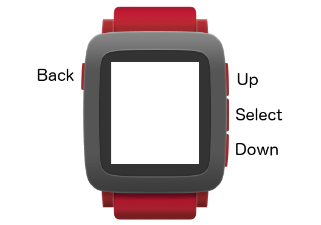

Button Clicks are the primary input method on Pebble. All Pebble
watches come with the same buttons available, shown in the diagram below for
Pebble Time:

These buttons are used in a logical fashion throughout the system:
Back - Navigates back one Window until the watchface is reached.
Up - Navigates to the previous item in a list, or opens the past timeline when pressed from the watchface.
Select - Opens the app launcher from the watchface, accepts a selected option
or list item, or launches the next Window.
Down - Navigates to the next item in a list, or opens the future timeline when pressed from the watchface.
Developers are highly encouraged to follow these patterns when using button
clicks in their watchapps, since users will already have an idea of what each
button will do to a reasonable degree, thus avoiding the need for lengthy usage
instructions for each app. Watchapps that wish to use each button for a specific
action should use the ActionBarLayer or ActionMenu to give hints about
what each button will do.
Button clicks are received via a subscription to one of the types of button
click events listed below. Each Window that wishes to receive button click
events must provide a ClickConfigProvider that performs these subscriptions.
The first step is to create the ClickConfigProvider function:
static void click_config_provider(void *context) {
// Subcribe to button click events here
}
The second step is to register the ClickConfigProvider with the current
Window, typically after window_create():
// Use this provider to add button click subscriptions
window_set_click_config_provider(window, click_config_provider);
The final step is to write a ClickHandler function for each different type
of event subscription required by the watchapp. An example for a single click
event is shown below:
static void select_click_handler(ClickRecognizerRef recognizer, void *context) {
// A single click has just occured
}
There are five types of button click events that apps subscribe to, enabling virtually any combination of up/down/click events to be utilized in a watchapp. The usage of each of these is explained below:
Most apps will use this type of click event, which occurs whenever the button
specified is pressed and then immediately released. Use
window_single_click_subscribe() from a ClickConfigProvider function,
supplying the ButtonId value for the chosen button and the name of the
ClickHandler that will receive the events:
static void click_config_provider(void *context) {
ButtonId id = BUTTON_ID_SELECT; // The Select button
window_single_click_subscribe(id, select_click_handler);
}
Similar to the single click event, the single repeating click event allows repeating events to be received at a specific interval if the chosen button is held down for a longer period of time. This makes the task of scrolling through many list items or incrementing a value significantly easier for the user, and uses fewer button clicks.
static void click_config_provider(void *context) {
ButtonId id = BUTTON_ID_DOWN; // The Down button
uint16_t repeat_interval_ms = 200; // Fire every 200 ms while held down
window_single_repeating_click_subscribe(id, repeat_interval_ms,
down_repeating_click_handler);
}
After an initial press (but not release) of the button id subscribed to, the
callback will be called repeatedly with an interval of repeat_interval_ms
until it is then released.
Developers can determine if the button is still held down after the first
callback by using click_recognizer_is_repeating(), as well as get the number
of callbacks counted so far with click_number_of_clicks_counted():
static void down_repeating_click_handler(ClickRecognizerRef recognizer,
void *context) {
// Is the button still held down?
bool is_repeating = click_recognizer_is_repeating(recognizer);
// How many callbacks have been recorded so far?
uint8_t click_count = click_number_of_clicks_counted(recognizer);
}
Single click and single repeating click subscriptions conflict, and cannot be registered for the same button.
A multi click event will call the ClickHandler after a specified number of
single clicks has been recorded. A good example of usage is to detect a double
or triple click gesture:
static void click_config_provider(void *context) {
ButtonId id = BUTTON_ID_SELECT; // The Select button
uint8_t min_clicks = 2; // Fire after at least two clicks
uint8_t max_clicks = 3; // Don't fire after three clicks
uint16_t timeout = 300; // Wait 300ms before firing
bool last_click_only = true; // Fire only after the last click
window_multi_click_subscribe(id, min_clicks, max_clicks, timeout,
last_click_only, multi_select_click_handler);
}
Similar to the single repeating click event, the ClickRecognizerRef can be
used to determine how many clicks triggered this multi click event using
click_number_of_clicks_counted().
A long click event is fired after a button is held down for the specified amount
of time. The event also allows two ClickHandlers to be registered - one for
when the button is pressed, and another for when the button is released. Only
one of these is required.
static void click_config_provider(void *context) {
ButtonId id = BUTTON_ID_SELECT; // The select button
uint16_t delay_ms = 500; // Minimum time pressed to fire
window_long_click_subscribe(id, delay_ms, long_down_click_handler,
long_up_click_handler);
}
The last type of button click subcsription is used to track raw button click
events. Like the long click event, two ClickHandlers may be supplied to
receive each of the pressed and depressed events.
static void click_config_provider(void *context) {
ButtonId id = BUTTON_ID_SELECT; // The select button
window_raw_click_subscribe(id, raw_down_click_handler, raw_up_click_handler,
NULL);
}
The last parameter is an optional pointer to a context object to be passed to the callback, and is set to
NULLif not used.